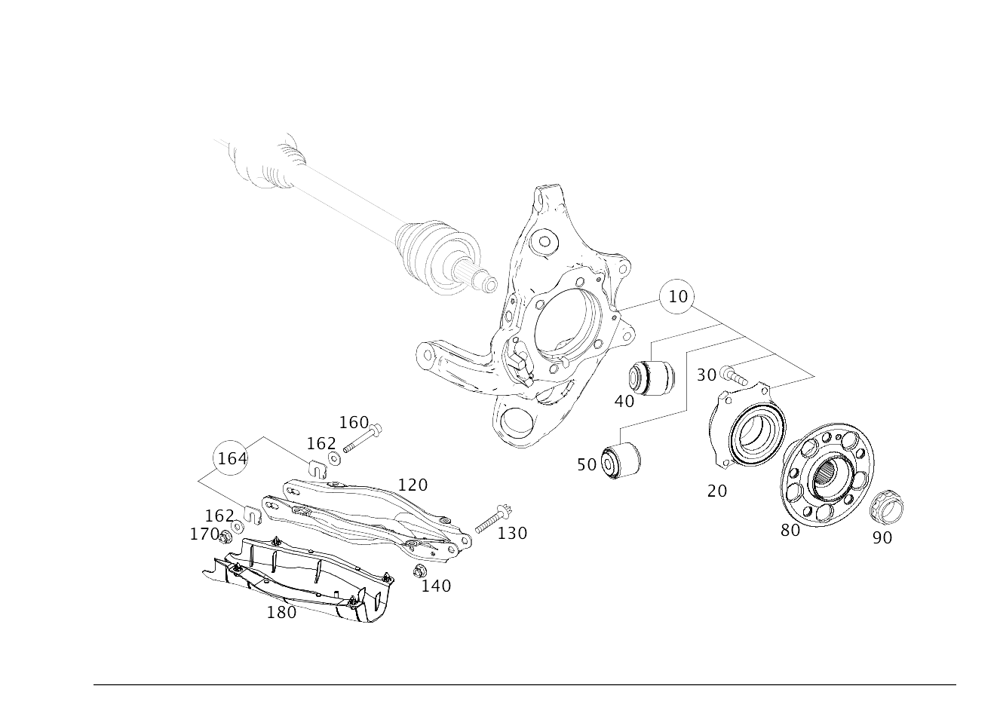

| № | Артикул | Название | Кол. | Примечание | Ограничение |
|---|---|---|---|---|---|
| 10 | A 213 350 55 07 | Кулак подвески (WHEEL CARRIER) | 1 | Слева с фланцем колеса | M177+M40+489 |
| 10 | A 213 350 56 07 | Кулак подвески (WHEEL CARRIER) | 1 | Справа с фланцем колеса | M177+M40+489 |
| 20 | A 205 356 00 00 | - Подшипник ступицы колеса (WHEEL BEARING) | 1 | Слева с фланцем колеса | M177+M40 |
| 20 | A 205 356 00 00 | - Подшипник ступицы колеса (WHEEL BEARING) | 1 | Справа с фланцем колеса | M177+M40 |
| 30 | A 004 990 09 03 | - Винт Torx External (HEXALOBULAR HEAD SCREW) | 4 | Подшипник ступицы колеса к кулаку подвески слева | M177+M40 |
| 30 | A 001 990 42 03 | - Винт Torx External (HEXALOBULAR HEAD SCREW) | 4 | Подшипник ступицы колеса к кулаку подвески слева | |
| 30 | A 004 990 09 03 | - Винт Torx External (HEXALOBULAR HEAD SCREW) | 4 | Подшипник ступицы колеса к кулаку подвески справа | M177+M40 |
| 30 | A 001 990 42 03 | - Винт Torx External (HEXALOBULAR HEAD SCREW) | 4 | Подшипник ступицы колеса к кулаку подвески справа | |
| 40 | A 205 352 37 00 | - Опорный шарнир (SUPPORTING JOINT) | 1 | Рычаг амортизационной стойки к кулаку подвески слева | M177+M40 |
| 40 | A 205 352 37 00 | - Опорный шарнир (SUPPORTING JOINT) | 1 | Рычаг амортизационной стойки к кулаку подвески справа | M177+M40 |
| 80 | A 293 357 00 00 | Фланец заднего колеса (REAR-AXLE WHEEL FLANGE) | 1 | Слева | 9O1 |
| 80 | A 293 357 00 00 | Фланец заднего колеса (REAR-AXLE WHEEL FLANGE) | 1 | Справа | 9O1 |
| 90 | A 000 353 13 73 | Гайка вала заднего моста (COLLAR NUT FOR RA SHAFT) | 2 | Полуось заднего моста к ступице M26X1,5 | |
| 90 | A 000 990 73 24 | 12-гран. гайка с фланцем (TWELVE-POINT NUT W COLLAR) | 2 | Полуось заднего моста к ступице M29X1,5 | 9O1 |
| 120 | A 205 352 20 00 | Рычаг подвески (SPRING LINK) | 1 | К кулаку подвески слева | |
| 120 | A 205 352 33 00 | Рычаг подвески (SPRING LINK) | 1 | К кулаку подвески слева | 9O1 |
| 120 | A 205 352 20 00 | Рычаг подвески (SPRING LINK) | 1 | К кулаку подвески справа | |
| 120 | A 205 352 33 00 | Рычаг подвески (SPRING LINK) | 1 | К кулаку подвески справа | 9O1 |
| 120 | A 205 352 34 01 | Рычаг подвески (SPRING LINK) | 1 | К кулаку подвески слева | M177+M40+489 |
| 120 | A 205 352 34 01 | Рычаг подвески (SPRING LINK) | 1 | К кулаку подвески справа | M177+M40+489 |
| 130 | A 002 990 75 03 | Винт Torx External (HEXALOBULAR HEAD SCREW) | 1 | Рычаг амортизационной стойки к кулаку подвески слева; M14X1,5X81,5 | |
| 130 | A 002 990 71 03 | Винт Torx External (HEXALOBULAR HEAD SCREW) | 1 | Рычаг амортизационной стойки к кулаку подвески слева; M14X1,5X110 | 9O1 |
| 130 | A 002 990 75 03 | Винт Torx External (HEXALOBULAR HEAD SCREW) | 1 | Рычаг амортизационной стойки к кулаку подвески справа; M14X1,5X81,5 | |
| 130 | A 002 990 71 03 | Винт Torx External (HEXALOBULAR HEAD SCREW) | 1 | Рычаг амортизационной стойки к кулаку подвески справа; M14X1,5X110 | 9O1 |
| 130 | A 002 990 71 03 | Винт Torx External (HEXALOBULAR HEAD SCREW) | 1 | Рычаг амортизационной стойки к кулаку подвески слева; M14X1,5X110 | 489 |
| 130 | A 002 990 71 03 | Винт Torx External (HEXALOBULAR HEAD SCREW) | 1 | Рычаг амортизационной стойки к кулаку подвески справа; M14X1,5X110 | 489 |
| 140 | N 000000 008268 | Гайка (NUT) | 1 | Рычаг амортизационной стойки к кулаку подвески слева; M14X1,5 | |
| 140 | N 000000 008268 | Гайка (NUT) | 1 | Рычаг амортизационной стойки к кулаку подвески справа; M14X1,5 | |
| 140 | N 000000 008268 | Гайка (NUT) | 1 | Рычаг амортизационной стойки к кулаку подвески слева; M14X1,5 | 489 |
| 140 | N 000000 008268 | Гайка (NUT) | 1 | Рычаг амортизационной стойки к кулаку подвески справа; M14X1,5 | 489 |
| 160 | A 004 990 63 05 | Винт с цилиндр. головкой (CAP SCREW) | 1 | Рычаг амортизационной стойки к балке заднего моста слева; M12X1,5X121 | 9O1 |
| 160 | N 000000 002338 | Винт с 6-гр. глвк (HEXALOBULAR SCREW) | 1 | Рычаг амортизационной стойки к балке заднего моста слева | M177+M40+489 |
| 160 | A 004 990 63 05 | Винт с цилиндр. головкой (CAP SCREW) | 1 | Рычаг амортизационной стойки к балке заднего моста справа; M12X1,5X121 | 9O1 |
| 160 | N 000000 002338 | Винт с 6-гр. глвк (HEXALOBULAR SCREW) | 1 | Рычаг амортизационной стойки к балке заднего моста справа | M177+M40+489 |
| 162 | A 014 990 55 82 | Пластина плоскопарал. (WASHER, PLANE PARALLEL) | 2 | Рычаг амортизационной стойки слева | M177+M40 |
| 162 | A 014 990 55 82 | Пластина плоскопарал. (WASHER, PLANE PARALLEL) | 2 | Рычаг амортизационной стойки справа | M177+M40 |
| 164 | A 205 357 50 00 | Регулировочная пластина (ADJUSTING PLATE) | 2 | Комплект деталей рычага амортизационной стойки слева | M177+M40 |
| 164 | A 205 357 50 00 | Регулировочная пластина (ADJUSTING PLATE) | 2 | Комплект деталей рычага амортизационной стойки справа | M177+M40 |
| 170 | N 000000 008269 | Гайка (NUT) | 1 | Рычаг амортизационной стойки к балке заднего моста слева; M12X1,5 | |
| 170 | N 000000 008269 | Гайка (NUT) | 1 | Рычаг амортизационной стойки к балке заднего моста справа; M12X1,5 | |
| 180 | A 205 352 29 00 | Облицовка (TRIM) | 1 | Рычаг амортизационной стойки слева | -700 |
| 180 | A 213 352 07 00 | Облицовка рычага стойки (TRIM, SPRING LINK) | 1 | Рычаг амортизационной стойки слева | 9O1 |
| 180 | A 205 352 30 00 | Облицовка (TRIM) | 1 | Рычаг амортизационной стойки справа | -700 |
| 180 | A 213 352 08 00 | Облицовка рычага стойки (TRIM, SPRING LINK) | 1 | Рычаг амортизационной стойки справа | 9O1 |
| 180 | A 213 352 07 00 | Облицовка рычага стойки (TRIM, SPRING LINK) | 1 | Рычаг амортизационной стойки слева | 489/700+489 |
| 180 | A 213 352 08 00 | Облицовка рычага стойки (TRIM, SPRING LINK) | 1 | Рычаг амортизационной стойки справа | 489/700+489 |
| 180 | A 205 352 85 00 | Облицовка рычага стойки | 1 | Рычаг амортизационной стойки слева | 700 |
| 180 | A 205 352 86 00 | Облицовка рычага стойки | 1 | Рычаг амортизационной стойки справа | 700 |
| 250 | A 253 350 93 07 | CAMBER ARM (CAMBER STRUT) | 1 | Слева | M177+M40 |
| 250 | A 253 350 94 07 | CAMBER ARM (CAMBER STRUT) | 1 | Справа | M177+M40 |
| 260 | N 910105 012018 | Винт с 6-гранной головкой (HEXAGON HEAD BOLT) | 1 | Верхняя поперечная тяга к кулаку подвески слева; M12X1.5X100 | M177+M40 |
| 260 | N 910105 012018 | Винт с 6-гранной головкой (HEXAGON HEAD BOLT) | 1 | Верхняя поперечная тяга к кулаку подвески справа; M12X1.5X100 | M177+M40 |
| 270 | A 000 994 68 10 | Стопорная шайба (RETAINING WASHER) | 1 | Верхняя поперечная тяга к кулаку подвески слева | |
| 270 | A 000 994 68 10 | Стопорная шайба (RETAINING WASHER) | 1 | Верхняя поперечная тяга к кулаку подвески справа | |
| 280 | N 000000 008269 | Гайка (NUT) | 1 | Верхняя поперечная тяга к кулаку подвески слева; M12X1,5 | |
| 280 | N 000000 008269 | Гайка (NUT) | 1 | Верхняя поперечная тяга к кулаку подвески справа; M12X1,5 | |
| 300 | N 000000 004179 | Винт с 6-гр. глвк (HEXALOBULAR SCREW) | 1 | Верхняя поперечная тяга к балке заднего моста слева; M12X1,5X75 | M177+M40 |
| 300 | N 000000 004179 | Винт с 6-гр. глвк (HEXALOBULAR SCREW) | 1 | Верхняя поперечная тяга к балке заднего моста справа; M12X1,5X75 | M177+M40 |
| 310 | N 000000 008269 | Гайка (NUT) | 1 | Верхняя поперечная тяга к балке заднего моста слева; M12X1,5 | |
| 310 | N 000000 008269 | Гайка (NUT) | 1 | Верхняя поперечная тяга к балке заднего моста справа; M12X1,5 | |
| 350 | A 253 350 91 07 | Продольный рычаг (TENSION STRUT) | 1 | Слева | M177+M40 |
| 350 | A 253 350 91 07 | Продольный рычаг (TENSION STRUT) | 1 | Справа | M177+M40 |
| 360 | N 910105 012018 | Винт с 6-гранной головкой (HEXAGON HEAD BOLT) | 1 | Продольный рычаг к кулаку подвески слева; M12X1.5X100 | M177+M40 |
| 360 | N 910105 012018 | Винт с 6-гранной головкой (HEXAGON HEAD BOLT) | 1 | Продольный рычаг к кулаку подвески справа; M12X1.5X100 | M177+M40 |
| 370 | A 000 994 68 10 | Стопорная шайба (RETAINING WASHER) | 1 | Продольный рычаг к кулаку подвески слева | |
| 370 | A 000 994 68 10 | Стопорная шайба (RETAINING WASHER) | 1 | Продольный рычаг к кулаку подвески справа | |
| 380 | N 000000 008269 | Гайка (NUT) | 1 | Продольный рычаг к кулаку подвески слева; M12X1,5 | |
| 380 | N 000000 008269 | Гайка (NUT) | 1 | Продольный рычаг к кулаку подвески справа; M12X1,5 | |
| 400 | N 000000 004179 | Винт с 6-гр. глвк (HEXALOBULAR SCREW) | 1 | Продольный рычаг к балке заднего моста слева; M12X1,5X75 | M177+M40 |
| 400 | N 000000 004179 | Винт с 6-гр. глвк (HEXALOBULAR SCREW) | 1 | Продольный рычаг к балке заднего моста справа; M12X1,5X75 | M177+M40 |
| 410 | N 000000 008269 | Гайка (NUT) | 1 | Продольный рычаг к балке заднего моста слева; M12X1,5 | |
| 410 | N 000000 008269 | Гайка (NUT) | 1 | Продольный рычаг к балке заднего моста справа; M12X1,5 | |
| 450 | A 205 350 67 23 | Поперечная рулевая тяга (TIE ROD) | 1 | Слева | M177+M40 |
| 450 | A 205 350 68 23 | Поперечная рулевая тяга (TIE ROD) | 1 | Справа | M177+M40 |
| 460 | A 004 990 66 05 | Винт с цилиндр. головкой (CAP SCREW) | 1 | Поперечная тяга к кулаку подвески слева; M12X1,5X87 | |
| 460 | A 004 990 66 05 | Винт с цилиндр. головкой (CAP SCREW) | 1 | Поперечная тяга к кулаку подвески справа; M12X1,5X87 | |
| 470 | A 000 994 68 10 | Стопорная шайба (RETAINING WASHER) | 1 | Поперечная тяга к кулаку подвески слева | |
| 470 | A 000 994 68 10 | Стопорная шайба (RETAINING WASHER) | 1 | Поперечная тяга к кулаку подвески справа | |
| 480 | N 000000 008269 | Гайка (NUT) | 1 | Поперечная тяга к кулаку подвески слева; M12X1,5 | |
| 480 | N 000000 008269 | Гайка (NUT) | 1 | Поперечная тяга к кулаку подвески справа; M12X1,5 | |
| 500 | A 002 990 45 20 | Эксцентриковый болт (ECCENTRIC SCREW) | 1 | Поперечная тяга к балке заднего моста слева | |
| 500 | A 002 990 41 20 | Эксцентриковый болт (ECCENTRIC SCREW) | 1 | Поперечная тяга к балке заднего моста слева; M12X1,5X109 | |
| 500 | A 002 990 45 20 | Эксцентриковый болт (ECCENTRIC SCREW) | 1 | Поперечная тяга к балке заднего моста справа | |
| 500 | A 002 990 41 20 | Эксцентриковый болт (ECCENTRIC SCREW) | 1 | Поперечная тяга к балке заднего моста справа; M12X1,5X109 | |
| 510 | A 000 352 00 76 | Диск (WINDOW) | 1 | Поперечная тяга к балке заднего моста слева | |
| 510 | A 000 352 00 76 | Диск (WINDOW) | 1 | Поперечная тяга к балке заднего моста справа | |
| 520 | N 000000 008269 | Гайка (NUT) | 1 | Поперечная тяга к балке заднего моста слева; M12X1,5 | |
| 520 | N 000000 008269 | Гайка (NUT) | 1 | Поперечная тяга к балке заднего моста справа; M12X1,5 | |
| 540 | A 205 350 30 14 | Реактивная штанга (THRUST ARM) | 1 | Слева | M177+M40 |
| 540 | A 205 350 30 14 | Реактивная штанга (THRUST ARM) | 1 | Справа | M177+M40 |
| 550 | N 910105 012018 | Винт с 6-гранной головкой (HEXAGON HEAD BOLT) | 1 | Реактивная штанга к кулаку подвески слева; M12X1.5X100 | M177+M40 |
| 550 | N 910105 012018 | Винт с 6-гранной головкой (HEXAGON HEAD BOLT) | 1 | Реактивная штанга к кулаку подвески справа; M12X1.5X100 | M177+M40 |
| 560 | N 000000 008269 | Гайка (NUT) | 1 | Реактивная штанга к кулаку подвески слева; M12X1,5 | |
| 560 | N 000000 008269 | Гайка (NUT) | 1 | Реактивная штанга к кулаку подвески справа; M12X1,5 | |
| 580 | A 003 990 23 05 | Винт с цилиндр. головкой (CAP SCREW) | 1 | Реактивная штанга к балке заднего моста слева; M12X1,5X70 | |
| 580 | A 003 990 22 05 | Винт с цилиндр. головкой (CAP SCREW) | 1 | Реактивная штанга к балке заднего моста слева; M12X1,5X65 | |
| 580 | A 003 990 23 05 | Винт с цилиндр. головкой (CAP SCREW) | 1 | Реактивная штанга к балке заднего моста справа; M12X1,5X70 | |
| 580 | A 003 990 22 05 | Винт с цилиндр. головкой (CAP SCREW) | 1 | Реактивная штанга к балке заднего моста справа; M12X1,5X65 | |
| 590 | N 000000 008269 | Гайка (NUT) | 1 | Реактивная штанга к балке заднего моста слева; M12X1,5 | |
| 590 | N 000000 008269 | Гайка (NUT) | 1 | Реактивная штанга к балке заднего моста справа; M12X1,5 |
Позиций: 100 · подписано на схемах: 100 · колесо — плавный зум в курсор, перетаскивание — пан, двойной клик — зум, клик по артикулу — скопировать · наведите на строку или цифру на схеме — подсветка связки, клик — закрепить.